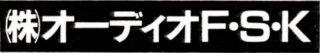
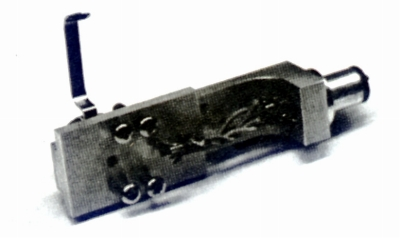
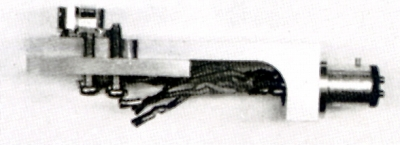

オーディオF・S・K
長年オーディオ・アクセサリー誌に広告を掲載しているガレージメーカー。電源ボックスや、ビニール・ゴム・テフロンなどを廃し絹・綿・紙を使用した各種のコード、「サウンドマジラー」と呼ぶアルミナのスペーサーなどを販売している。またアンプやスピーカーの改造なども手がける。
アナログオーディオ関連では、自社の広告でソノボックスのカートリッジSX-8SSを「常時在庫(誌聴OK）」と掲載していたのが印象に残っている。ネットの掲示板で見る限り、リードワイヤーなどいろいろな製品が在ったようだが、具体的な製品の資料は持っていない。
唯一手元に在ったのは、1984年頃のオーディオアクセサリー誌に掲載されたヘッドシェルの記事だけである。
FHS-5


■価格 60,000〜70,000円（予価）
■発売 1984年頃？
■備考 材質はアルミ系のムクの削り出し
ピンに非磁性体、絶縁材に布入りベークを使用
リードチップは同社のケーブル技術を生かしたランダム電荷を持たない特殊なものを使用。
重量は18g。
実際に販売されたのか？販売されたとしていくらで販売されたのかは不明。
なお1985年頃の同社の広告には正体不明のMC型カートリッジ
FMC-3(65,000円)が
記載されている。このカートリッジはシェル付きでは130,000円となっており、
シェル代が65,000円ということになる。上記のFHS-5はこの為のシェルかもしれない。
なお同じ広告にはMC用ヘッドアンプCASBO-1(100,000円)の名前もある。